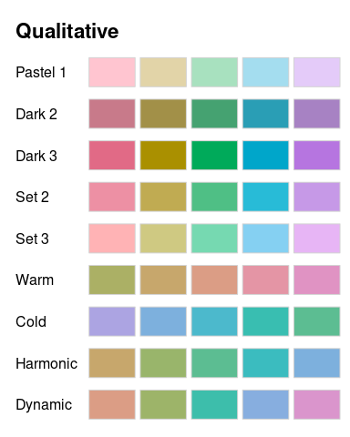
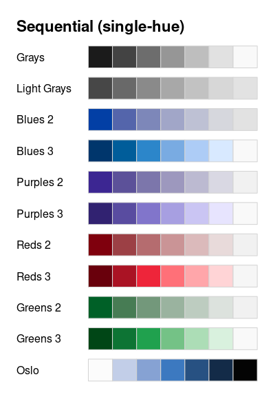
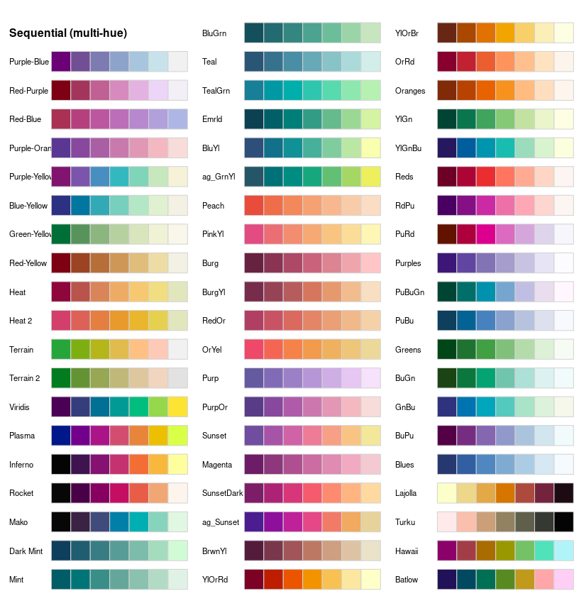
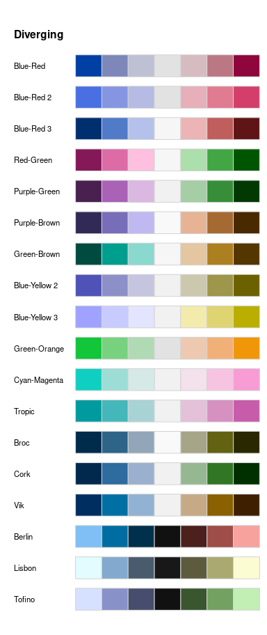
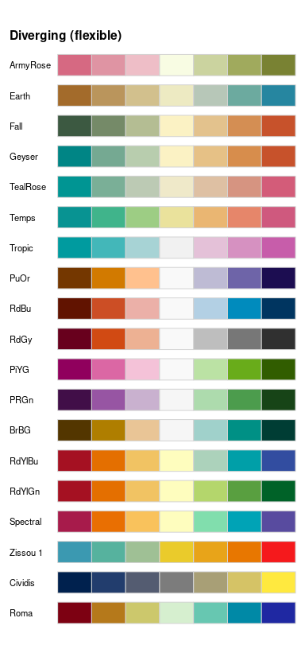

HCL-Based Color Palettes
hcl_palettes.RmdOverview
As motivated in the previous section, the HCL space is particularly useful for specifying individual colors and color palettes as its three axes match those of the human visual system very well. Therefore, the colorspace package provides three types of palettes based on the HCL model:
- Qualitative: Designed for coding categorical information, i.e., where no particular ordering of categories is available and every color should receive the same perceptual weight.
- Sequential: Designed for coding ordered/numeric information, i.e., where colors go from high to low (or vice versa).
- Diverging: Designed for coding numeric information around a central neutral value, i.e., where colors diverge from neutral to two extremes.
The corresponding functions are qualitative_hcl(), sequential_hcl(), and diverging_hcl(). Their construction principles are exemplified in the following color swatches and explained in more detail below. The desaturated palettes bring out clearly that luminance differences (= light-dark contrasts), or the lack thereof, are crucial for coding the different kinds of palettes.

To facilitate obtaining good sets of colors, HCL parameter combinations that yield useful palettes are accessible by name. These can be listed using the function hcl_palettes():
## HCL palettes
##
## Type: Qualitative
## Names: Pastel 1, Dark 2, Dark 3, Set 2, Set 3, Warm, Cold, Harmonic,
## Dynamic
##
## Type: Sequential (single-hue)
## Names: Grays, Light Grays, Blues 2, Blues 3, Purples 2, Purples 3, Reds
## 2, Reds 3, Greens 2, Greens 3, Oslo
##
## Type: Sequential (multi-hue)
## Names: Purple-Blue, Red-Purple, Red-Blue, Purple-Orange, Blue-Yellow,
## Green-Yellow, Red-Yellow, Heat, Heat 2, Terrain, Terrain 2,
## Viridis, Plasma, Inferno, Dark Mint, Mint, BluGrn, Teal,
## TealGrn, Emrld, BluYl, ag_GrnYl, Peach, PinkYl, Burg,
## BurgYl, RedOr, OrYel, Purp, PurpOr, Sunset, Magenta,
## SunsetDark, ag_Sunset, BrwnYl, YlOrRd, YlOrBr, OrRd,
## Oranges, YlGn, YlGnBu, Reds, RdPu, PuRd, Purples, PuBuGn,
## PuBu, Greens, BuGn, GnBu, BuPu, Blues, Lajolla, Turku
##
## Type: Diverging
## Names: Blue-Red, Blue-Red 2, Blue-Red 3, Red-Green, Purple-Green,
## Purple-Brown, Green-Brown, Blue-Yellow 2, Blue-Yellow 3,
## Green-Orange, Cyan-Magenta, Tropic, Broc, Cork, Vik,
## Berlin, Lisbon, TofinoTo inspect the HCL parameter combinations for a specific palette simply include the name where upper- vs. lower-case, spaces, etc. are ignored for matching the label, i.e., "set2" matches "Set 2":
## HCL palette
## Name: Set 2
## Type: Qualitative
## Parameter ranges:
## h1 h2 c1 c2 l1 l2 p1 p2 cmax fixup
## 0 NA 60 NA 70 NA NA NA NA TRUETo compute the actual color hex codes (representing sRGB coordinates), the functions qualitative_hcl(), sequential_hcl(), and diverging_hcl(), respectively, can be used. Either all parameters can be specified “by hand” through the HCL parameters, an entire palette can be specified “by name”, or the name-based specification can be modified by a few HCL parameters. In case of the HCL parameters, either a vector-based specification such as h = c(0, 270) or individual parameters h1 = 0 and h2 = 270 can be used.
## [1] "#ED90A4" "#ABB150" "#00C1B2" "#ACA2EC"## [1] "#ED90A4" "#ABB150" "#00C1B2" "#ACA2EC"## [1] "#ED90A4" "#ABB150" "#00C1B2" "#ACA2EC"## [1] "#FFACBF" "#C6CD70" "#32DDCD" "#C7BEFF"Qualitative palettes
qualitative_hcl() distinguishes the underlying categories by a sequence of hues while keeping both chroma and luminance constant to give each color in the resulting palette the same perceptual weight. Thus, h should be a pair of hues (or equivalently h1 and h2 can be used) with the starting and ending hue of the palette. Then, an equidistant sequence between these hues is employed, by default spanning the full color wheel (i.e, the full 360 degrees). Chroma c (or equivalently c1) and luminance l (or equivalently l1) are constants.
In the following graphic the available named palettes are shown. The first five palettes are close to the ColorBrewer.org palettes of the same name (Harrower and Brewer 2003). They employ different levels of chroma and luminance and, by default, span the full hue range. The remaining four palettes are taken from Ihaka (2003). They are based on the same chroma (= 50) and luminance (= 70) but the hue is restricted to different intervals.

When qualtitative palettes are employed for shading areas in statistical displays (e.g., in bar plots, pie charts, or regions in maps), then it is typically less distracting to use lighter colors (with moderate chroma and high luminance) such as “Pastel 1” or “Set 3”. When coloring points or lines then more flashy colors (with high chroma) are often required: On a white background a moderate luminance as in “Dark 2” or “Dark 3” usually works better while on a black/dark background the luminance should be higher as in “Set 2” for example.
Sequential palettes (single-hue)
sequential_hcl() codes the underlying numeric values by a monotonic sequence of increasing (or decreasing) luminance. Thus, the l argument should provide a vector of length 2 with starting and ending luminance (equivalently, l1 and l2 can be used). Without chroma (i.e., c = 0), this simply corresponds to a grayscale palette like gray.colors(), see “Grays” and “Light Grays” below.
For adding chroma, a simple strategy would be to pick a single hue (via h or h1) and then decrease chroma from some value (c or c1) to zero (i.e., gray) along with increasing luminance. For bringing out the extremes (a dark high-chroma color vs. a light gray) this is already very effective, see “Blues 2”, “Purples 2”, “Reds 2”, and “Greens 2”.
For distinguishing also colors in the middle two strategies can be employed: (a) Hue can be varied as well by specifying an interval of hues in h (or beginning hue h1 and ending hue h2). More details are provided in the next section. (b) Instead of a decreasing chroma a triangular chroma trajectory can be employed from c1 over cmax to c2 (or equivalently a vector c of length 3). This yields high-chroma colors in the middle of the palette that are more easily distinguished from the dark and light extremes. See “Blues 3”, “Purples 3”, “Reds 3”, and “Greens 3” below.
Chroma coordinates
\[ \begin{align*} \text{Constant: } & c_1 \\[0.2cm] \text{Linear: } & c_2 - (c_2 - c_1) \cdot i \\[0.2cm] \text{Triangular: } & \left\{ \begin{array}{lcl} c_2 - (c_2 - c_\max) \cdot \frac{i}{j} & \text{if } i & \le j \\ c_\max - (c_\max - c_1) \cdot \frac{i - j}{1 - j} & & > j \end{array} \right. \end{align*} \]
with
\[ j = \left(1 + \frac{|c_\max - c_1|}{|c_\max - c_2|} \right)^{-1} \]
Instead of \(i\) also \(i^{p_1}\).
Instead of employing linear trajectories in the chroma or luminance coordinates some palettes employ a power transformation of the chroma and/or luminance trajectory. Either a vector power of length 2 or separate p1 (for chroma) and p2 (for luminance) can be specified. If missing, the latter defaults to the former.

All except the last palette are inspired by the ColorBrewer.org palettes with the same base name (Harrower and Brewer 2003) but restricted to a single hue only. They are intended for a white/light background. The last palette is taken from the scientific color maps of Crameri (2018) and is intended for a black/dark background and hence the order is reversed starting from a light blue (not a light gray).
To distinguish many colors in a sequential palette it is important to have a strong contrast on the luminance axis, possibly enhanced by an accompanying pronounced variation in chroma. When only a few colors are needed (e.g., for coding an ordinal categorical variable with few levels) then a lower luminance contrast may suffice.
Sequential palettes (multi-hue)
To not only bring out extreme colors in a sequential palette but also better distinguish middle colors it is a common strategy to employ a sequence of hues. Thus, the basis of such a palette is still a monotonic luminance sequence as above (combined with a monotonic or triangular chroma sequence). But, instead of a single hue, an interval of hues in h (or beginning hue h1 and ending hue h2) is specified.
sequential_hcl() allows to combine variations in hue (h and h1/h2, respectively), chroma (c and c1/c2/cmax, respectively), luminance (l and l1/l2, respectively), and power transformations for the chroma and luminance trajectories (power and p1/p2, respectively). This yields a broad variety of sequential palettes, including many that closely match other well-known color palettes. The plot below shows all the named multi-hue sequential palettes in colorspace:
- “Purple-Blue” to “Terrain 2” are various palettes created during the development of colorspace, e.g., by Zeileis, Hornik, and Murrell (2009) or Stauffer et al. (2015) among others.
- “Viridis” to “Inferno” closely match the palettes that Smith and Walt (2015) developed for matplotlib and that gained popularity recently.
- “Dark Mint” to “BrwnYl” closely match palettes provided in CARTO (CARTO 2018).
- “YlOrRd” to “Blues” closely match ColorBrewer.org palettes (Harrower and Brewer 2003).
- “Lajolla” and “Turku” closely match the scientific color maps of the same name by Crameri (2018) and are intended for a black/dark background.

Note that the palettes differ substantially in the amount of chroma and luminance contrasts, respectively. For example, many palettes go from a dark high-chroma color to a neutral low-chroma color (e.g., “Reds”, “Purples”, “Greens”, “Blues”) or even light gray (e.g., “Purple-Blue”). But some palettes also employ relatively high chroma throughout the palette (e.g., the viridis and many CARTO palettes). To emphasize the extremes the former strategy is typically more suitable while the latter works better if all values along the sequence should receive some more perceptual weight.
Diverging palettes
diverging_hcl() codes the underlying numeric values by a triangular luminance sequence with different hues in the left and in the right “arm” of the palette. Thus, it can be seen as a combination of two sequential palettes with some restrictions: (a) a single hue is used for each arm of the palette, (b) chroma and luminance trajectory are balanced between the two arms, (c) the neutral central value has zero chroma. To specify such a palette a vector of two hues h (or equivalently h1 and h2), either a single chroma value c (or c1) or a vector of two chroma values c (or c1 and cmax), a vector of two luminances l (or l1 and l2), and power parameter(s) power (or p1 and p2) are used. For more flexible diverging palettes without the restrictrictions above (and consequently more parameters) see the next section.
The plot below shows all such diverging palettes that have been named in colorspace:
- “Blue-Red” to “Cyan-Magenta” have been developed for colorspace starting from Zeileis, Hornik, and Murrell (2009), taking inspiration from various other palettes, including more balanced and simplified versions of several ColorBrewer.org palettes (Harrower and Brewer 2003).
- “Tropic” closely matches the palette of the same name from CARTO (CARTO 2018).
- “Broc” to “Vik” and “Berlin” to “Tofino” closely match the scientific color maps of the same name by Crameri (2018), where the first three are intended for a white/light background and the other three for a black/dark background.

When choosing a particular palette for a display similar considerations apply as for the sequential palettes. Thus, large luminance differences are important when many colors are used while smaller luminance contrasts may suffice for palettes with fewer colors etc.
Flexible diverging palettes
The divergingx_hcl() provides more flexible diverging palettes by simply calling sequential_hcl() twice with prespecified sets of hue, chroma, and luminance parameters. Thus, it does not pose any restrictions that the two “arms” of the palette need to be balanced and also allows to go through a non-gray neutral color (typically light yellow). Consequently, the chroma/luminance paths can be rather unbalanced
The plot below shows all such flexible diverging palettes that have been named in colorspace:
- “ArmyRose” to “Tropic” closely match the palettes of the same name from CARTO (CARTO 2018).
- “PuOr” to “Spectral” closely match the palettes of the same name from ColorBrewer.org (Harrower and Brewer 2003).

Typically, the more restricted diverging palettes should be preferred because they are more balanced. However, by being able to go through light yellow as the neutral color warmer diverging palettes are available.
HCL (and HSV) color palettes corresponding to base R palettes
To facilitate switching from base R palette functions to the HCL-based palettes above, colorspace provides a few convenience interfaces:
-
rainbow_hcl(): Convenience interface toqualitative_hcl()for a HCL-based “rainbow” palette to replace the (in)famousrainbow()palette. -
heat_hcl(): Convenience interface tosequential_hcl()with default parameters chosen to generate more balanced heat colors than the basicheat.colors()function. -
terrain_hcl(): Convenience interface tosequential_hcl()with default parameters chosen to generate more balanced terrain colors than the basicterrain.colors()function. -
diverging_hsv(): Diverging palettes generated in HSV space rather than HCL space as indiverging_hcl(). This is provided for didactic purposes to contrast the more balanced HCL palettes with the more flashy and unbalanced HSV palettes.
References
CARTO. 2018. “CARTOColors – Data-Driven Color Schemes.” https://carto.com/carto-colors/.
Crameri, Fabio. 2018. “Geodynamic Diagnostics, Scientific Visualisation and Staglab 3.0.” Geoscientific Model Development 11 (6): 2541–62. https://doi.org/10.5194/gmd-11-2541-2018.
Harrower, Mark A., and Cynthia A. Brewer. 2003. “ColorBrewer.org: An Online Tool for Selecting Color Schemes for Maps.” The Cartographic Journal 40: 27–37. http://ColorBrewer.org/.
Ihaka, Ross. 2003. “Colour for Presentation Graphics.” In Proceedings of the 3rd International Workshop on Distributed Statistical Computing, Vienna, Austria, edited by Kurt Hornik, Friedrich Leisch, and Achim Zeileis. http://www.ci.tuwien.ac.at/Conferences/DSC-2003/Proceedings/.
Smith, Nathaniel, and Stéfan Van der Walt. 2015. “A Better Default Colormap for Matplotlib.” In. Austin. https://www.youtube.com/watch?v=xAoljeRJ3lU.
Stauffer, Reto, Georg J. Mayr, Markus Dabernig, and Achim Zeileis. 2015. “Somewhere over the Rainbow: How to Make Effective Use of Colors in Meteorological Visualizations.” Bulletin of the American Meteorological Society 96 (2): 203–16. https://doi.org/10.1175/BAMS-D-13-00155.1.
Zeileis, Achim, Kurt Hornik, and Paul Murrell. 2009. “Escaping RGBland: Selecting Colors for Statistical Graphics.” Computational Statistics & Data Analysis 53: 3259–70. https://doi.org/10.1016/j.csda.2008.11.033.